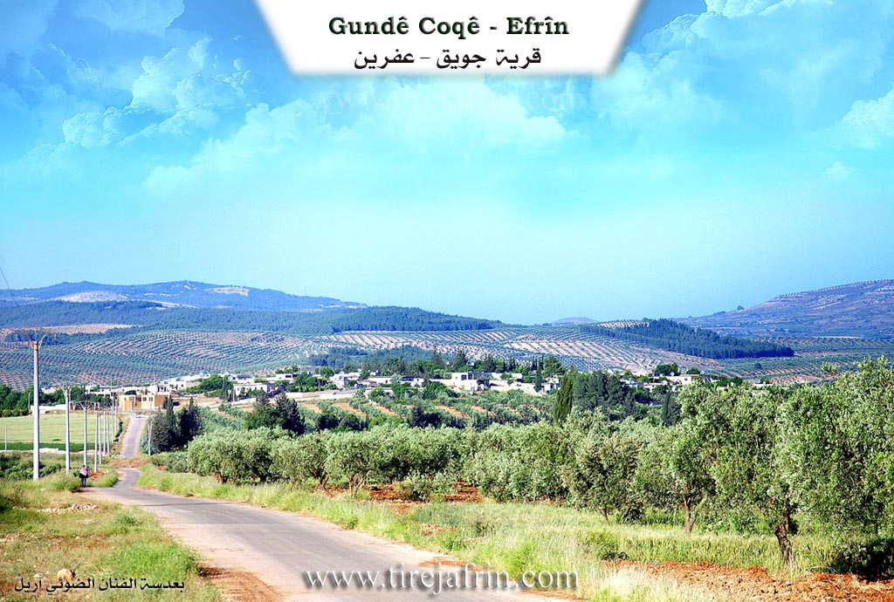
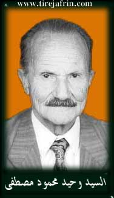
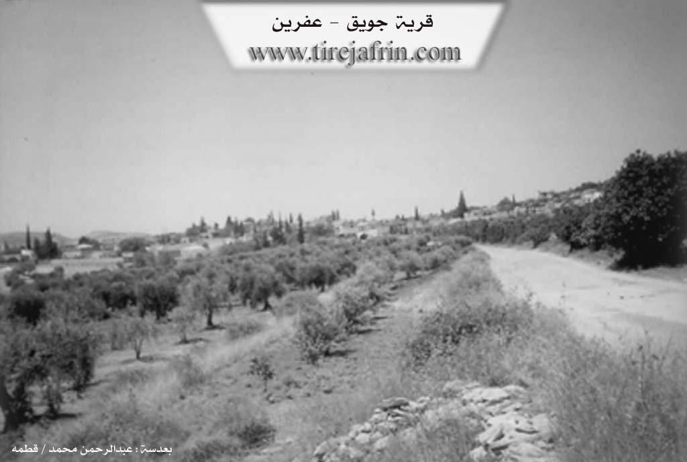

General Information
Nahiya (Subdistrict)
Efrîn
Also Known As
Al-Khadra, Ciwêq, Coqê, Cûqê, Jawiq, Jûqê, Çewîq, الخضراء, جويق, جوقه
Tribes
Koçer, Neîm
Families, Clans, etc.
Bekir, Birsan, Dado, Direyî, Emara, Emaro, Ezeddîn, Fayiq, Gil Swêd, Hecî Hemîd, Hemdîyê, Hemdûd, Hesen, Kêla, Mala Apê Emîn, Mala Betno, Mala Dumke, Mala Ehmedê Hecî, Mala Emara, Mala Ereb, Mala Ewel, Mala Fatmê, Mala Fayîq, Mala Mela Brokî Taha, Mala Mela Meîrê Taha, Mala Pêlawê, Mala Taha, Mala Îbê Kofke, Mala Îsko, Mala Şêxê Selo, Mela, Mela Omer, Nasir, Nasro, Neso, Osman, Qerekiçî, Sîdo, Sîs, Xerîb, Çeqel, Îbûke, Ûsîke

Photos



Basic Information about Coqê
Source: Ax û Welat
Shrines: Şêx Cemadîn, Şehîd Cemaleddîn, Cêm Ziorat
Trees: dara miraza
Source: Afrin 366
Etymology: Derived from the sound of abundant flowing water described as Cifiq Cifiq
Caves: Şkefta mala Ehmedê Hecî, Şkefta mala Îbê Kofke, Şkefta mala Îsko
Other Landmarks: Paporê, Qistê, Qistê Avke, Dolgerê
Summaries
I. Summary from TirejAfrin Site (English) of Coqê
Source: https://www.tirejafrin.com/site/kura%20afrin%20markaz-%20coqe.htm
It is stated in the book جبل الكرد ( عفرين ) دراسة جغرافية Çiyayê Kurmênc (Efrîn): A Geographical Study by د. محمد عبدو علي Dr. Mihemed Ebdo Elî: Coq, Cuwêq, El-Xedra /5479 people - 1572 hectares - 9km - 440m/:
I believe that the name is derived from Cowik, which is a diminutive name for a water stream in the Kurdish language, as there was a perennial spring in the center of the village. A copious water stream also passes beside it, formed from the spring of the village of Dargir, and it was perennial.
It is a large village located on the southern slope of a limestone height furrowed by water channels, one of which passes through the center of the village. From the south, the village overlooks the wide valley coming from the direction of the village of Dargir. Nearby is the well-known shrine of Mezarê Şêx Cemal El-Dîn. There is significant emigration of residents from Coq, and it also has a high percentage of individuals with higher education. In past decades, it was an important political center for the organizations of political parties present in the Efrîn region. Among them are the well-known communist and former member of the People's Council Wehîd Mehmûd, and the nationalist politician Ebdulrehman Osman. It is worth mentioning that in the village cemetery, there is a grave belonging to Nasir Axa son of Ehmed Beg dated to the year 1213 AH / 1798 AD. The archaeological site of Eyn Dîbe is located in the eastern plain of the village, and it was a flourishing city in the pre-Islamic eras.
It is stated in the book: عفرين .... نهرها وروابيها الخضراء Efrîn... Her River and Her Green Hills by the writer عبدالرحمن محمد Ebdulrehman Mihemed from the village of Qetme:
Coq: A village in Çiyayê Kurmênc that administratively belongs to the sub-district of the villages of the Efrîn center, Heleb governorate. It is a large village located on the southern slope of a limestone height, furrowed by water channels from all sides. It overlooks a valley to the south that heads west towards the Efrîn valley. Its soil is clay, covered by forests and pastoral grasses. It is 8km away from the city of Efrîn towards the northwest.
It sits on a mountain slope between three valleys, specifically the middle water channel passing through the village towards the east, which divides the village into three sections: a western section, a middle section, and an eastern section. It is bordered to the north by mountainous heights planted with olive trees, the village of Kokan Jorîn and Kokan Jêrîn, the Riya Reco-Efrîn (Reco-Efrîn road), and the village of Eyn Hecerê Mezin. To the west, it is bordered by a mountain height, a plain planted with olive trees, and the village of Dargirê Mezin. To the south, it is bordered by a slope, a valley, mountainous heights planted with olive and walnut trees, and the village of Xelnêr. To the east, it is bordered by a wide plain planted with olive trees, the Riya Reco-Efrîn (Reco-Efrîn road), the village of Estar, and Eyn Dîbe.
The number of its houses reaches about 300 houses, and its age is about 700 years according to the statements of one of the elderly residents of the village. The habitation of the area is ancient, evidenced by the presence of many caves in the center of the village. Its old houses are stone and mud with wooden ceilings, while the modern ones are concrete. The village has expanded to the west, south, and east, and along both sides of the paved road.
An electricity network is available, as well as drinking water from artesian wells from the village of Dargir. There is a primary and preparatory school and a mosque in the center of the village. A municipality was established in 2003, as well as a farmers' cooperative and a consumer establishment. It is connected to the region by a paved road that passes through its center to the village of Dargir and Mabeta. Its residents work in the cultivation of olives, grains, legumes, and vegetables, alongside raising sheep and goats. There are several soap and oil factories in the eastern side. Most of the village's houses are old and have not been restored due to the migration of its residents to the city of Efrîn and Heleb. It is one of the largest villages of the Efrîn center, and the farm of Mosana and the farm of Eyn Dîbe belong to it.
Among the holders of higher degrees in the village are Dr. Riyad Menla Mihemed (PhD in Business Administration - University of Aleppo), and Dr. Samî Hac Elî (PhD in Electrical Engineering - Czechoslovakia).
Village Mukhtar:
Ibrahîm Dawûd
Preparation and execution:
Manager of Tirej Efrîn site: Ebdulrehman Hacî Osman
20/12/2013
Sources:
- Book: جبل الكرد ( عفرين ) دراسة جغرافية Çiyayê Kurmênc (Efrîn): A Geographical Study by د. محمد عبدو علي Dr. Mihemed Ebdo Elî.
- Book: عفرين .... نهرها وروابيها الخضراء Efrîn... Her River and Her Green Hills by عبدالرحمن محمد Ebdulrehman Mihemed from the village of Qetme.
II. Summary of Coqê from Ax û Welat
Source: https://www.youtube.com/watch?v=W_lwnl-ZtVA
The village of Cûqê, located in the Çiyayê Kurmênc region of Efrîn, is deeply characterized by its spiritual devotion and musical heritage. While the specific foundation date of the village is not recorded, the community centers its life around a sacred site believed by locals to possess a history spanning thousands of years. This site is the shrine of Şêx Cemadîn, also referred to as Şehîd Cemaleddîn or locally as Cêm Ziorat.
The history of the shrine is preserved through oral tradition. An elderly resident recounts a foundational legend concerning a sick boy who, in a dream, was visited by the saint identifying himself as Şêx Cemadîn (or Ehliya dîn). The saint requested that a shrine be built in his honor. At that time, the region was suffering from a severe summer drought. Following the dream, the community elders gathered to pray and collect soil at the designated spot, which miraculously resulted in immediate rainfall. Historically, the physical structure of the shrine was established by an individual named Eqîd Xaxî, who built the room that now stands over the site.
Cûqê serves as a regional pilgrimage destination. Devotees visit from Efrîn, Heleb (Aleppo), and neighboring villages like Kûkanê and Çeqelêlûn. The shrine is considered "muqeddes" (sacred/holy) and is visited by those seeking healing or the granting of wishes ("miraz"). A central feature of this practice is a specific tree known as dara miraza (Tree of Wishes). Visitors, including students like Jano, tie cloths to the tree to petition for success in exams or personal endeavors. The elderly resident notes that people of all backgrounds, including those from the city, come to sleep at the shrine seeking cures for illnesses, with specific mention of a neighbor named Cemîl and the family of her uncle.
Culturally, Cûqê is recognized for its artistic contributions. The village is home to the musical group Hozan, which consists of eight members. Prominent musicians from the village include the singer Mehemed Beşar and the tembûr player Mehmûdê Osman, who perform songs dedicated to the "Ax û Welat" (Land and Country), emphasizing the deep emotional connection the residents have to their ancestral home. The village atmosphere is described as communal, where visitors are welcomed with food and music, maintaining traditions that blend religious reverence with Kurdish cultural expression.
II. Summary of Coqê from Afrin 366
Source: https://www.youtube.com/watch?v=ar0Esd-trJo
The village of Cuqê is situated in a high and picturesque location within the Efrîn region. According to local elders the village is ancient (kevnar) and its name likely derives from the onomatopoeic sound of abundant water known as "Cifiq Cifiq" which once flowed freely through the area. Residents recall a time when water sources were plentiful enough to irrigate crops like cotton and watermelons down to the banks of the Efrîn river near boundaries such as Paporê and Qistê. However environmental changes and human activity have since caused these waters to recede leaving the land drier than in previous generations.
The social history of Cuqê is deeply rooted in its distinct family lineages. In earlier times residents lived in ancient caves (şkeft) located throughout the village terrain before moving into built structures. Specific caves serve as historical markers for the arrival and settlement of families including Mala Ehmedê Hecî and Mala Îbê Kofke (also referred to as Mala Ewel). Other notable families mentioned in the oral history include Mala Pêlawê plus Mala Îsko and Mala Dumke alongside Mala Ereb and Mala Emara and Mala Şêxê Selo. The documentary also visits the compounds of the Mala Taha family specifically noting the homes of Mala Mela Brokî Taha and Mala Mela Meîrê Taha.
Daily life in the past was characterized by intense communal cooperation. Elders describe a time without electricity when lighting came from oil lamps called serzêta and entertainment consisted of storytelling during the long nights. Neighbors shared supplies like nanê tîr (flatbread) and yogurt and maintained strong bonds through shared meals especially during religious festivals. The village hosts a weekly market on Sundays (Yekşemê) which serves as a central economic hub for the immediate area distinguishing it from the Monday market in Cindirês or the Wednesday market in Mabeta.
The village contains several sites of local significance including a cemetery where the host pays respects at the graves of individuals such as Meryemê and Mistefa. The area of Dolgerê is noted as an adjacent location. Despite the migration of many young people to Europe particularly Almanya the elders maintain the memory of the village's vibrant agricultural past and the social cohesion that once defined life in Cuqê. Residents of the Gil Swêd lineage are also mentioned as having family members abroad whom they miss dearly.
II. Summary of Coqê from Multi Channel
The documentary explores the village of Ciwêq, also referred to in Arabic as Al Khadra, located eight kilometers northwest of Efrîn. Nestled on a moderately elevated limestone plateau, Ciwêq is bisected by a deep valley that once contained a flowing stream. A larger valley stretches to the south, originating from the neighboring village of Darkîr. To the east of the village lies the ancient archaeological site and water spring of Eyn Dîba, which historically powered three local flour mills and continues to provide water for the villagers.
The settlement of Ciwêq has deep historical roots dating back over four centuries. According to village elder Ebdulkerîm Mela Mihemed, the original inhabitants first lived in the caves situated in the steep valleys to protect themselves from wild animals and highway robbers. The Emara and Nasir families were the earliest to inhabit these caves, which are still known today as Şikeftên Emara and Şikeftên Nasir. Around four hundred and five years ago, his own ancestor, Mela Omer, migrated from the village of Hec Sama in the Besnî district near Entab and became the third household to settle in the caves. As the community grew and formed a unified front for mutual protection, they emerged from the caves to build houses close together on the slopes above. Today, Ciwêq features historic architecture, including a prominent mosque with an ancient minaret and the traditional two hundred and fifty year old home of Ezeddîn Osman Mihemed Direyî, whose ancestor was a local agha. This house was constructed with thick stone walls, high windows, and a large reception room for guests.
Ciwêq is home to a diverse mosaic of Kurdish, Arab, and Turkmen residents. Despite their different origins, they are deeply integrated, communicating primarily in the Kurdish language and sharing local customs. Prominent Kurdish families include Mela Omer, Emara, Hecî Hemîd, also known as Qerekiçî, Hemdûd, Hesen, and Neso. The Nasir family is cited as being of Arab origin, tracing lineage to the Neîm tribe and the Birsan lineage, while the Ezeddîn family originally migrated from Pirsûs. Historical intermarriage, such as when the ancestor of the Hesen family arrived from Turkey to serve as the village imam and married into the Ezeddîn family, solidified the social fabric. Elder Ebdulkerîm recounts a past marked by strong communal solidarity, where villagers collectively helped one another harvest crops in the early morning dew without any expectation of payment.
Historically, the village economy was based on livestock and cultivating wheat and grapevines before shifting heavily toward olive farming. Today, Ciwêq is an agricultural community known for its olives, pomegranates, and newly introduced crops like black cumin and safflower, brought by internally displaced persons from Heleb, Hema, and Idlib. Displaced families, such as those of Ebdulcelîl El Elî and Xalid Hesen, have established strong and harmonious relationships with the locals, exchanging agricultural knowledge and partaking in communal celebrations. The village retains a vibrant rural lifestyle, beautifully exemplified by local women like Um Sîwar, who independently tends to her inherited olive groves, raises livestock, and cooks traditional regional dishes like lebeniye using fresh goat milk over an open wood fire.
II. Summary of Coqê from Multi Channel 2
The village of Ciwêq is located in the western countryside of Efrîn nestled between the Efrîn River and the neighboring villages of Qertelaq to the north and Dargîr to the west. While its specific foundation date is not detailed in the transcript the village possesses a deep historical footprint evidenced by ancient caves located in the surrounding valleys and traditional multilevel houses built directly into the mountain slopes. Historically Ciwêq held significant political and geographic importance and boasted a highly educated population. Many residents previously migrated to Halab specifically establishing themselves in the Bustanê Paşa and Eşrefiyê neighborhoods. In recent years however challenging economic and social conditions have driven extensive migration to Turkey and Europe.
The community consists of various established lineages including the Bekir Dado Osman Sîdo and Xerîb families. The village maintains a resilient local economy supported by approximately ten small shops. These include a barbershop run by Wahîd Bekir and a grocery store managed by Fuad Bekir. Furthermore a local clothing workshop operated by Ciwan inside an old olive press provides crucial employment for roughly ten local young men such as Mihemed. This workshop manufactures garments on commission for companies based in Efrîn. Displaced individuals including an Arab shepherd from southern Halab also reside and work in the village tending to the local flocks of sheep and goats.
The natural landscape is a defining feature of Ciwêq. The village is surrounded by agricultural lands planted with olive almond and pomegranate trees. A central water spring historically flowed through the village dividing it into two sections. Ancient caves dot the northern and southern slopes overlooking Geliyê Dargîr which translates to the valley of Dargîr. Modern architecture intermingles harmoniously with traditional building styles where large old oak trees can be seen growing directly within the courtyards of the ancient homes.
Ciwêq is renowned for its traditional crafts and folklore. The village has a longstanding reputation for blacksmithing specifically the crafting of specialized agricultural and pastoral knives. Mistefa Ehmed Sîdo also known by his tribal title Koçer continues this legacy. He forges specific pocket knives used by local farmers to carefully extract pests from olive trees and by shepherds for their livestock. Historically the imam of the village mosque was famous throughout the region for forging highly durable blades that were highly sought after in the markets of Cindirês Şêx Hedîd and Raco. The village is also rich in musical heritage. This tradition is represented by the local buzuq player Riyad Xerîb who performs traditional folklore songs like Anê Şivan e by the famous singer Elî Tico amidst the rainy and mountainous landscape of his home.
II. Summary of Coqê from Multi Channel 3
The documentary explores the history and daily life of Cûqê, a village historically known as Cûweq. According to village elder Evdilkerîm Mela Mihemed, the name translates to a place where people gather and go, as the settlement originally served as a large bustling market. People traveling to nearby Qilbê and Raco would frequently pass through this central hub.
The village was founded anywhere from four hundred to nine hundred years ago. Initially, a few families settled in the area and lived inside caves alongside their livestock. The earliest inhabitants included the Emaro and Nasro families. Later, the Sîs family and the Mela family arrived. The ancestor of the Mela family, Mela Omer, migrated from the distant village of Hesema in the Eyntabê region. As the population expanded, residents moved out of the caves and built adjacent stone houses connected by walls to protect themselves against thieves. These stone structures were bonded with mud instead of cement and differed greatly from the domed mud houses built by Arab populations in other regions. Over time, families such as the Çeqel, Îbûke, Ûsîke, Fayiq, Kêla, and Hemdîyê also established themselves in Cûqê.
Education in the early days was strictly religious. Children studied religious texts with local teachers in the mosque. Eventually, a formal school opened in a room belonging to the Fayiq family, taught by a visiting teacher from Hec Xelîl. Another elder recalls studying at the Keramet school in Efrîn under teachers like Mihemed Elî Xoce from Biabû and Xelîl Efendî from Qucuma.
Historically, the village economy was deeply rooted in agriculture. Women like Fatme Wehîd woke at dawn to milk sheep and make traditional dairy products. The village also boasted vast vineyards used to produce local spirits. In nineteen fifty, a devastating black wind burned the regional olive groves, though trees in higher elevations like Tila Kurd survived. Following this disaster, the villagers of Cûqê and neighboring settlements like Rêwerê, Şiyê, and Ma'melo pivoted to planting cotton, utilizing local water sources like the pond Gola Bîyê. With the introduction of water pumps replacing old watermills, they later diversified into fruit orchards and eventually replanted olive trees.
Modern life has brought new residents and businesses. Eymen Ebdo, a tailor displaced from Şamê and Heleb due to war, brought his clothing enterprise to the village. Another resident, Hemdûş Cemal Reşo, operates a large local roastery producing coffee and roasted seeds after transitioning away from a charcoal business. While the village has modernized and grown commercially, the elders look back fondly on the robust physical health and the strong communal harvesting bonds of their ancestors.
Transcriptions and Subtitles
| Source | Video | Subtitles | Transcript |
|---|---|---|---|
| Afrin 366 1 | Watch Video | Download SRT | View Transcript |
| Ax û Welat 1 | Watch Video | Download SRT | View Transcript |
| Multi Channel 1 | Watch Video | Download SRT | View Transcript |
| Multi Channel 2 | Watch Video | Download SRT | View Transcript |
| Multi Channel 3 | Watch Video | Download SRT | View Transcript |
Foundation/Origin Information of Coqê
The region's settlement is ancient, evidenced by many caves in the village center.
Source: TirejAfrin Site
The shrine is the resting place of a martyr from the village. The building was constructed later by charitable individuals.
Source: Ax û Walat Transcript
Possible Village Name Meaning of Coqê
Derived from "Cowik", a diminutive Kurdish name for a water stream.
Source: TirejAfrin Site
V. Links
- Tirej Afrin:
https://www.tirejafrin.com/site/kura%20afrin%20markaz-%20coqe.htm - Ax û Welat:
https://www.youtube.com/watch?v=W_lwnl-ZtVA - Jawlat:
https://www.youtube.com/watch?v=lhJr1dZzg-Y - Link:
https://www.youtube.com/watch?v=r0hDvpBgfGM - Drone:
https://www.youtube.com/watch?v=_7Q3h6vGVXU - Link:
https://www.youtube.com/watch?v=-P6RzHn5JsU - Video:
https://www.youtube.com/watch?v=zndu3XdPLyI - Link:
https://www.youtube.com/watch?v=g7lkFqQNd00 - Link:
https://www.youtube.com/watch?v=rMbnTiQoq7M - Link:
https://www.youtube.com/watch?v=TN3QywqIYXw - Link:
https://www.youtube.com/watch?v=jbaqmoHH88Y - Afrin 366:
https://www.youtube.com/watch?v=ar0Esd-trJo - Multi Channel:
https://youtu.be/w3zk_KuSTX4?si=YmcAc-M2Yu443kqN